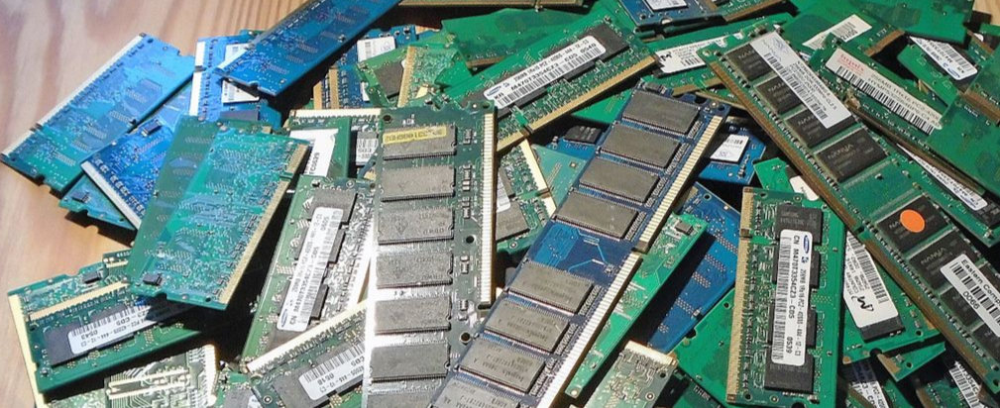

What Is BOINC?
BOINC is a platform that allows people to donate their computer to Science and other computational projects. This means an organization doesn't have to build up an expensive supercomputer and can take advantage of the volunteered computers around the world.
Why It Matters

Idle Processing Power
Use wasted processing power
There are around 900 million computers in the world, and they mostly sit waiting. BOINC helps put untapped power to use.
Scale
Over 800,000 active devices
If BOINC were a supercomputer it would be the world's third most powerful supercomputer (as of January 2018)
Results
165+ papers have been published
Discoveries from BOINC range from ways to limit malaria to finding pulsars. See more discoveries here.
Almost Anyone Can Help
Allows more public interaction
People with a computer or smartphone can help. This allows a more direct relation between the public and Science.

Cost
Only a server needs to be setup
Instead of having to host or rent an entire supercomputer, only a server needs to be setup.
Open Source
See and modify code for your needs
No need to buy a license or be restricted by what's available. See a list of all the code respositories here